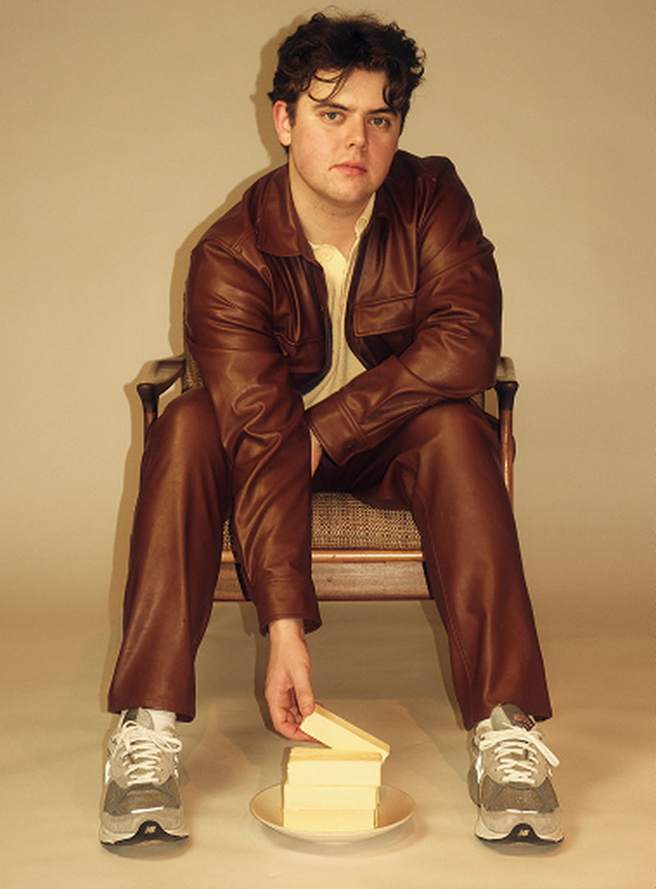
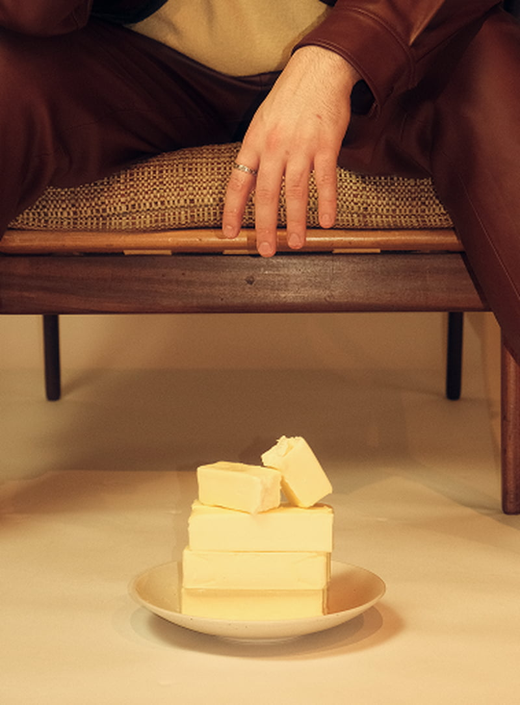
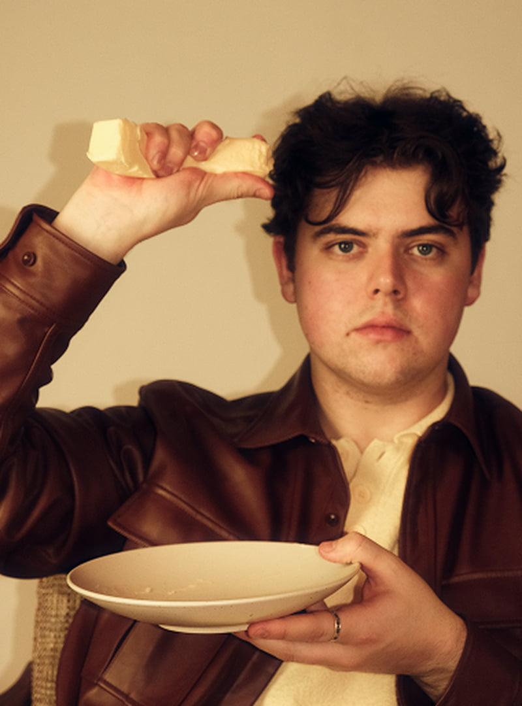
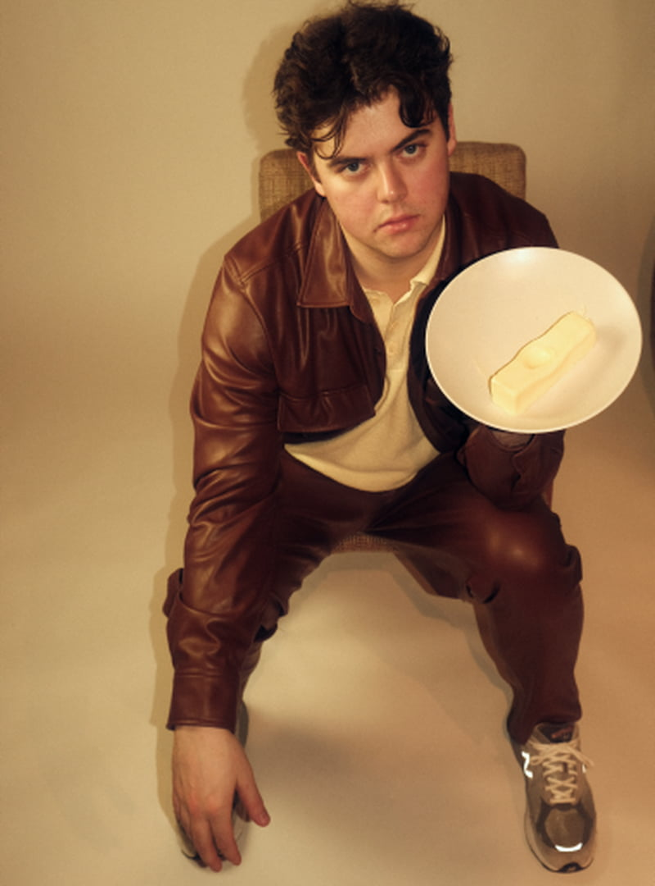
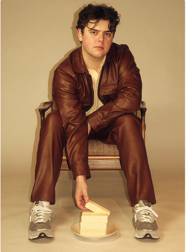
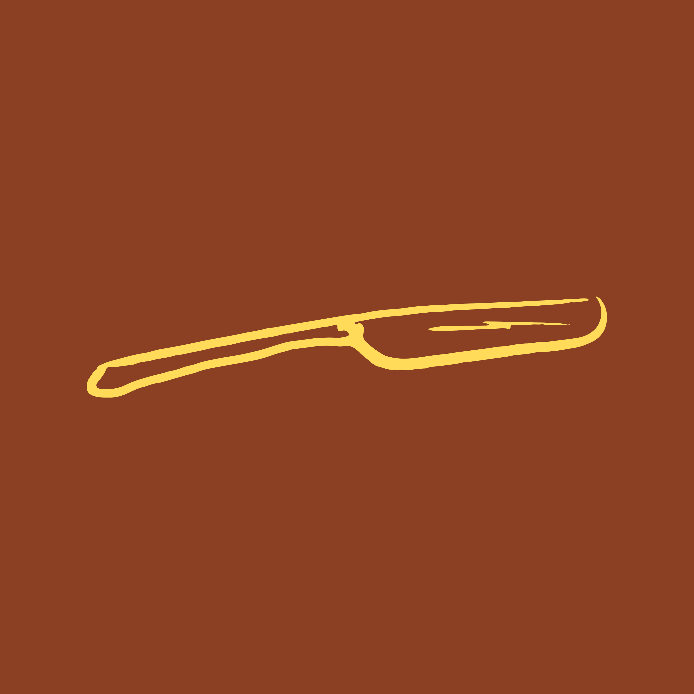
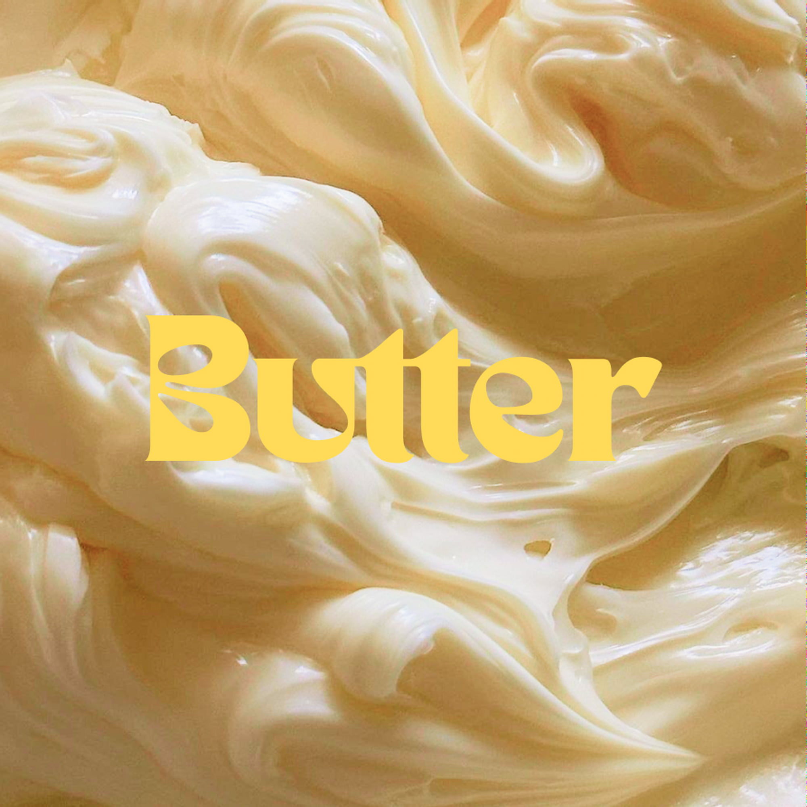
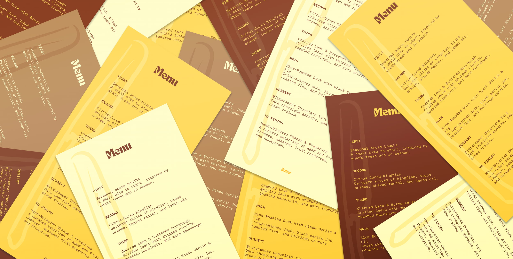
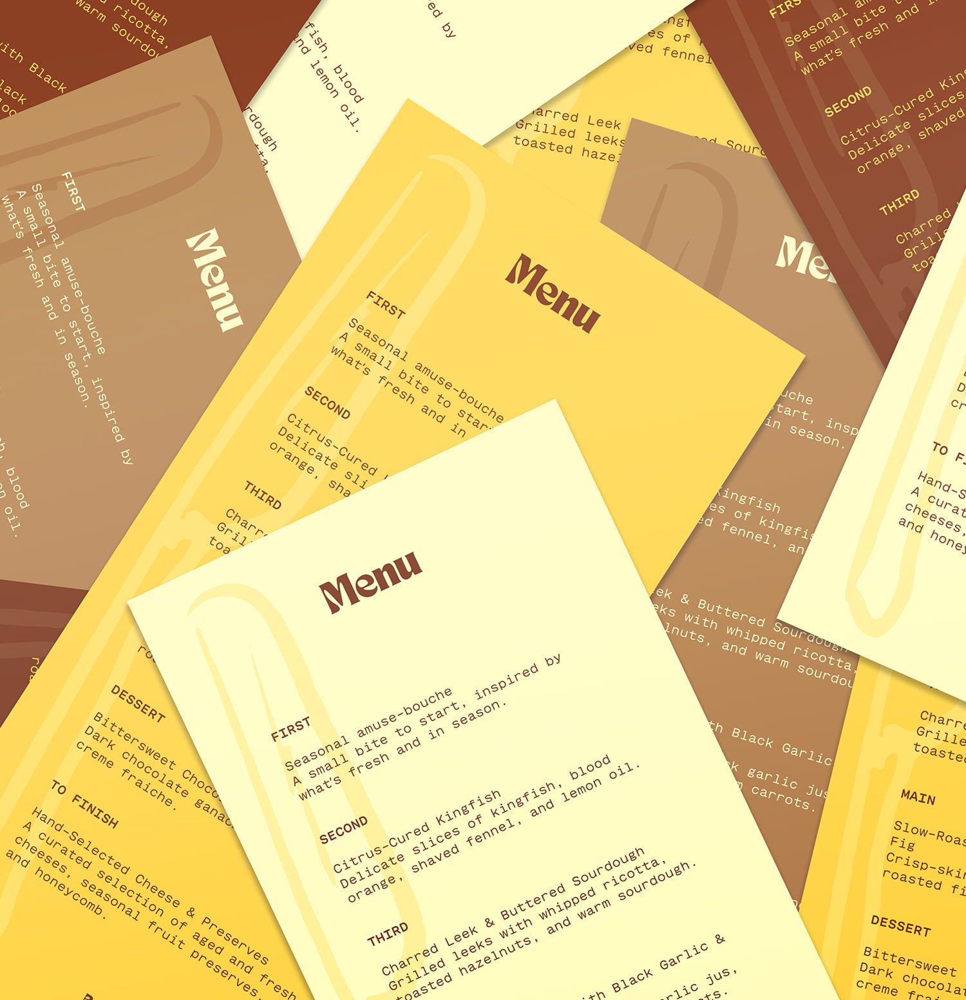

Butter was conceived by Max Wheatley to bring restaurant-quality dining into the home. The challenge was to create a brand that captured an experience both elevated and approachable, translating the intimacy of a private chef service into something people could immediately trust and desire. To succeed, it had to stand apart from generic catering or meal-prep services by positioning itself as a lifestyle experience as much as a food offering.
The Butter brand embodied Max Wheatley’s vision of bringing restaurant-quality dining into the home through an intimate, elevated experience built on warmth, craftsmanship, and connection. The identity paired a minimalist logo, typography, and color palette with editorial photography that conveyed the energy of being at the table. The website and collateral extended the experience across every touchpoint, positioning Butter as a premium yet approachable service with a cohesive identity ready to go from day one.
I led the creative direction for Butter from concept through launch. My work took a 360-degree approach, from designing the brand identity and building the website to creating supporting collateral. I art directed editorial and on-set photography to capture the intimacy of the dining experience and the personality of the chef. Every touchpoint reflected the same elevated yet inviting energy, giving Butter a cohesive system that could scale as the business grew.
Max Wheatley